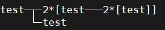
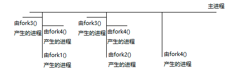

fork
系统调用：
pid_t fork(void);
子进程返回0，父进程返回子进程pid
出错返回-1，子进程不会被创建，会设置errno
错误原因可能是：系统中有太多的进程，实际用户的进程数超过了限制，命令ulimit -a中max user processes可查看用户最大能创建的进程数
fork后，就有两个二进制代码相同的进程，都运行到相同的地方，由调度器决定谁先执行。
子进程是父进程的一份拷贝，代码共享，数据独有
代码共享：共享代码段，父子进程的指令双方都能看到
数据独有：数据段、堆、栈
fork都做了那些事？
进程调用fork，由用户态切换到内核态
分配新的内存块和内核数据结构给子进程
将父进程部分数据结构内容拷贝至子进程
添加子进程到系统进程列表当中
fork返回，开始调度器调度
写实拷贝
通常，父子代码共享，父子再不写入时，数据也是共享的，子进程复制了父进程的task_struct，系统堆栈空间和页面表
任意一方写入时，便在物理空间中创建一份副本进行修改，并且映射到相同的虚拟地址空间中
也就是说：父进程和子进程共享物理页帧而不是复制页帧。只要页帧被共享，它们就不能被修改，即页帧被保护。无论父进程还是子进程何时试图写一个共享的页帧，就产生一个异常，这时内核就把这个页复制到一个新的页帧中并标记为可写。原来的页帧仍然是写保护的。当其他进程试图写入时，内核检查写进程是否是这个页帧的唯一属主，如果是，就把这个页帧标记为对这个进程是可写的
vfork
系统调用
pid_t vfork(void);
调用方法和返回值和fork相同
说起fork就不得不提类似的vfork，它直接共享了父进程的虚拟空间、物理空间，所以如果子进程（轻量级进程）修改数据则父进程会收到影响。也就是说子进程不可以return或者exit。但是可以_exit退出
子进程会导致父进程挂起，除非子进程exit或者execve才会唤起父进程
vfork存在的意义是为了快速创建进程，并且通过程序替换来运行其他程序，因为共享地址空间可以减少拷贝时间。但是自从fork实现写实拷贝后，此接口就几乎被淘汰了
clone
系统调用：
int clone(int (*fn)(void*), void* child_stack, int flags, void* arg);
fn 是需要执行的函数指针，即 clone 出来的子进程需要执行的函数内容。
child_stack 就明显是给子进程分配的系统堆栈空间的位置。（在linux下系统堆栈空间是2页面，就是8K的内存，其中在这块内存中，低地址上放入了值，这个值就是进程控制块task_struct的值）
flags 用于描述子进程需要从父进程中继承哪些部分的内容，因此通过这个值可以控制产生进程、线程、甚至非父子关系而是兄弟关系的进程等等，功能强大（可以说是一个轻量级进程的系统调用）
arg就是传给子进程的参数
1 | int Test() { |
system
库函数
int system(const char *command);
system()执行通过创建子进程执行/bin/sh -c命令指定的命令，并在命令完成后返回,在执行命令的时候,SIGCHLD将被阻塞，SIGINT和SIGQUIT将被忽略。
command:命令参数是指向包含shell命令行的以null结尾的字符串的指针。这个命令被传递给/bin/sh使用。
返回值:
fork()失败,返回-1
exec()失败,返回值相当于执行了exit(127)
参数command为NULL时返回1
system在执行期间调用进程会一直等待shell命令执行完成(waitpid等待子进程结束)才返回
popen/pclose
库函数：
FILE *popen(const char *command, const char *type);int pclose(FILE *stream);
popen会调用fork产生子进程，然后从子进程中调用/bin/sh -c来执行参数command的指令，参数type可用r代表读取，w代表写入。依照此type的值，popen会建立管道连到子进程的标准输出设备或标准输入设备，然后返回一个文件指针。随后进程便可以利用此文件指针来读取子进程的输出设备或是写入到子进程的标准输入设备中，若成功则返回文件指针，否则返回NULL,错误原因存在于errno中
测试代码：
1 | // test.cc |
1 | // cin.cc |
g++ test.cc -o testg++ cin.cc -o cin
然后执行./cin./test
一秒后输出hehe
这个一个异步执行的过程：test进程调用popen后fork一个子进程调用exec函数去执行command，然后cin进程启动阻塞到cin>>阶段，同时popen返回管道的描述符，fprintf将数据写入管道中，此时cin就被唤醒，打印数据信息
如果不加sleep函数，可能父进程在子进程还没打印的时候先退出，就会变成孤儿进程，因此可能在标头之后打印。
do_fork
内核函数：
do_fork(unsigned long clone_flag, unsigned long usp, structpt_regs)
fork、vfork、clone最底层涉及到的都是 do_fork() 这个调用，只是传入参数不同，clone 可以认为就是个 do_fork() 的API外衣
其中clone_flag为：
| 标志 | 含义 |
|---|---|
| CLONE_PARENT | 创建的子进程的父进程是调用者的父进程，新进程与创建它的进程成了“兄弟”而不是“父子” |
| CLONE_FS | 子进程与父进程共享相同的文件系统，包括root、当前目录、umask |
| CLONE_FILES | 子进程与父进程共享相同的文件描述符（file descriptor）表 |
| CLONE_NEWNS | 在新的namespace启动子进程，namespace描述了进程的文件hierarchy |
| CLONE_SIGHAND | 子进程与父进程共享相同的信号处理（signal handler）表 |
| CLONE_PTRACE | 若父进程被trace，子进程也被trace |
| CLONE_VFORK | 父进程被挂起，直至子进程释放虚拟内存资源 |
| CLONE_VM | 子进程与父进程运行于相同的内存空间 |
| CLONE_PID | 子进程在创建时PID与父进程一致 |
| CLONE_THREAD | Linux 2.4中增加以支持POSIX线程标准，子进程与父进程共享相同的线程群 |
任何一位被置1了则表明创建的子进程和父进程共享该位对应的资源
vfork中clone_flag = CLONE_VFORK | CLONE_VM |SIGCHLD
这表示子进程和父进程共享地址空间、共享相同的信号处理表，同时do_fork会检查CLONE_VFORK，如果该位被置1了，子进程会把父进程的地址空间锁住，直到子进程退出或执行exec时才释放该锁
fork中clone_flag=SIGCHLD
两道有意思的面试题
判断创建几个进程：
1 | int main() { |
答案为8个，可以通过pstree命令查看：

分析：
主进程从左到右，子进程从上到下执行。

判断输出*的个数：
1 | int main() { |
输出6个*
1 | int main() { |
输出8个*，注意没有\n来刷新缓冲区，则子进程会拷贝父进程缓冲区中的数据